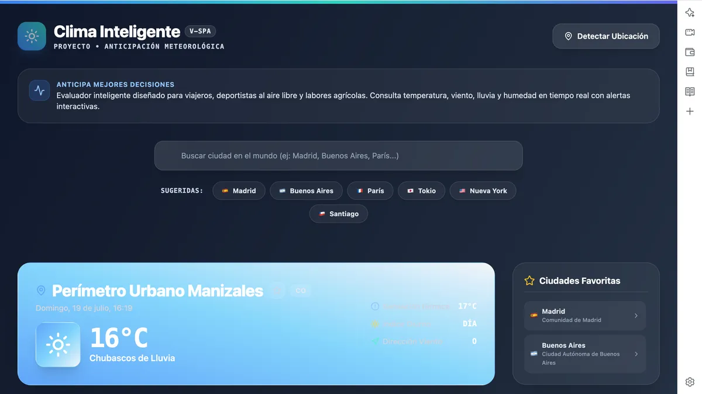
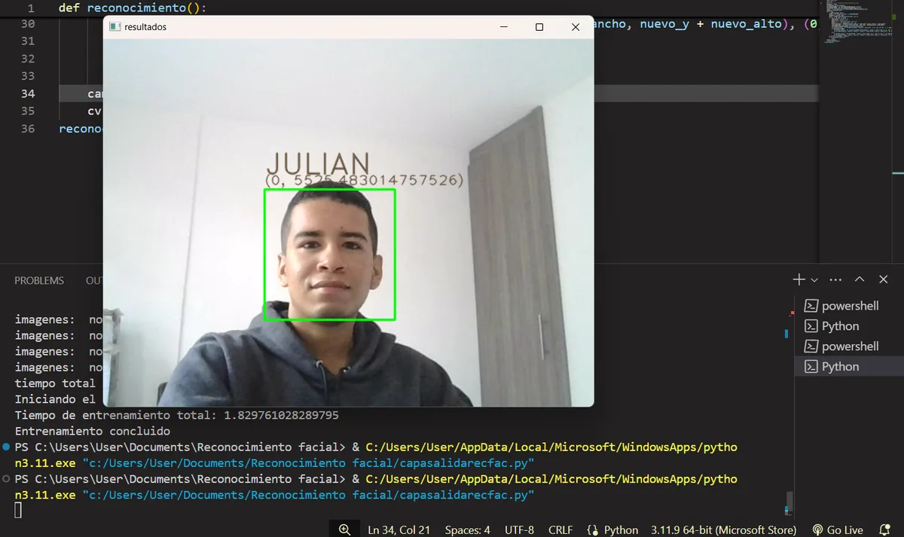
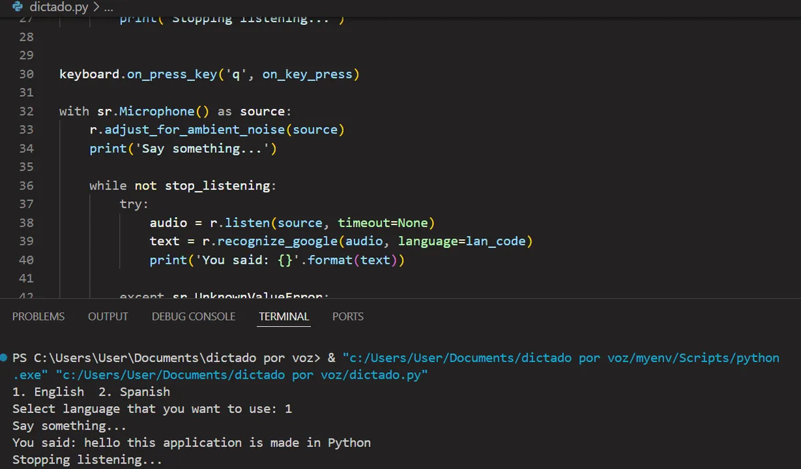
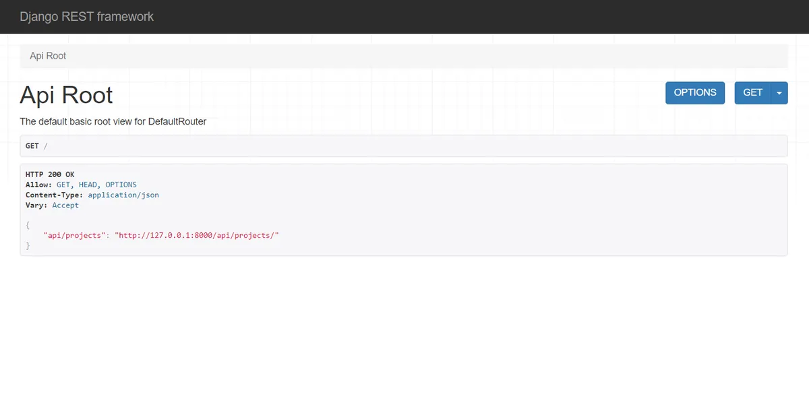
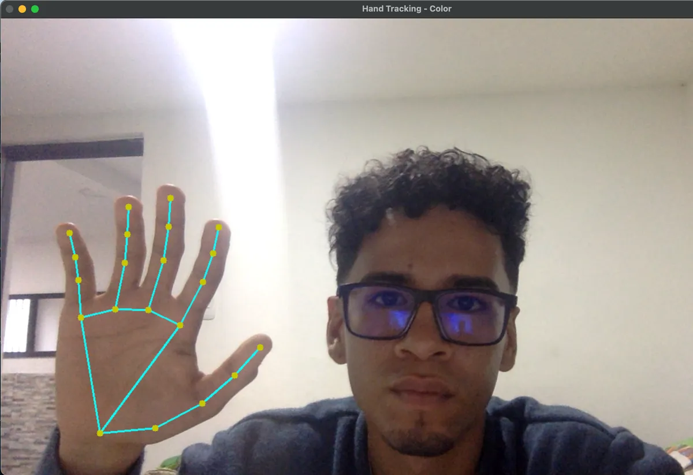
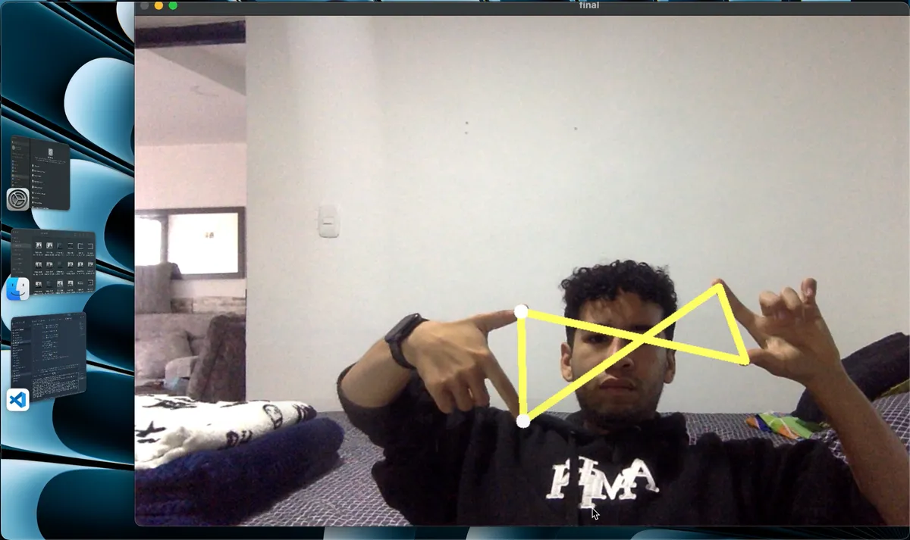

Evaluador meteorológico para viajeros, deportistas y labores agrícolas. Consulta temperatura, viento, lluvia y humedad en tiempo real con alertas interactivas.
- JavaScript
- API REST
- CSS
Disponible para nuevos proyectos
Construyo la base invisible de grandes productos digitales: APIs, arquitecturas escalables y sistemas que no fallan.
# perfil.py
class BackendEngineer:
def __init__(self):
self.name = "Julián Flórez"
self.stack = [
"Python",
"Java",
"PostgreSQL",
]
self.focus = "APIs escalables"
def build(self, idea):
return Architecture(idea).deploy()Una muestra de lo que construyo: APIs, visión artificial y productos web. Cada tarjeta enlaza al código o a la demo.

Evaluador meteorológico para viajeros, deportistas y labores agrícolas. Consulta temperatura, viento, lluvia y humedad en tiempo real con alertas interactivas.

Sistema de identificación biométrica que detecta y reconoce rostros en imágenes o video, con registro de nuevas caras y procesamiento en tiempo real.

Transcripción de voz a texto con detección de idioma y procesamiento de lenguaje natural. Soporta entrada en tiempo real y operación manos libres.
Aplicación de gestión de tareas con operaciones CRUD, persistencia en archivo y una interfaz de consola enfocada en productividad.

API REST para gestión de tareas con operaciones de creación, lectura, actualización y borrado, construida con Django REST Framework.

Rastreo de articulaciones de manos en tiempo real con visión artificial, pensado para interfaces sin contacto y experiencias interactivas.

Mapeo espacial de ambas manos para trazar conexiones geométricas dinámicas, explorando controles intuitivos y vanguardistas.
Lenguajes, bases de datos y herramientas que uso para convertir ideas abstractas en productos de software robustos.
Backend, automatización y ciencia de datos.
Interactividad y consumo de APIs del lado del cliente.
Modelado, consultas y persistencia de datos.
Programación orientada a objetos y backend.
Interfaces responsivas y sistemas de diseño.
Contenedores y despliegue reproducible.
Aplicaciones con modelos de lenguaje y agentes.
Control de versiones y colaboración.
Me adapto rápido a nuevas tecnologías y frameworks. Si tu proyecto lo requiere, lo aprendo y lo implemento.
Un recorrido por los roles donde he aplicado backend, IA y arquitecturas escalables.
SCIENCE-AI —
Siempre estoy abierto a nuevos retos, plataformas dinámicas y proyectos ambiciosos. Escríbeme y agendamos una conversación.
Backend Developer · Manizales, Colombia
Disponible para nuevos proyectos
Cuéntame qué tienes en mente. Respondo personalmente.